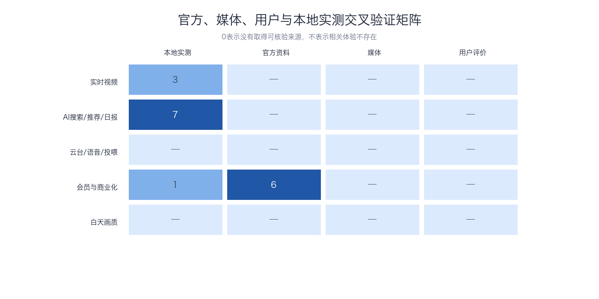
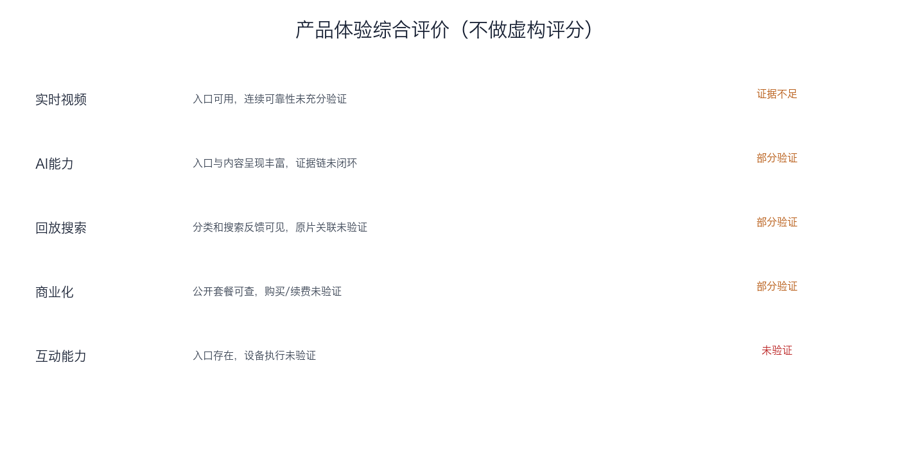

执行摘要
产品定位与用户任务
Furbo Mini 360°是一台以远程实时影像为入口、以事件理解和会员服务为延伸的宠物摄像机。用户从离家到续费的核心链路是：现在能否看到猫、刚才发生了什么、如何快速找到录像、是否及时被提醒、付费后得到什么、能否远程互动。
| 任务 | 当前可支持 | 仍未证明 |
|---|---|---|
| 现在看猫 | 入口和部分实时画面可出现 | 首帧、连续稳定、弱网恢复 |
| 回看事件 | 分类、日期、时间线、缩略图 | 播放器、原片关联、保存规则 |
| 理解事件 | AI消息、搜索、推荐、日报入口 | 准确性、证据链、误报漏报 |
| 付费价值 | 当前账号会员状态和到期日 | 权益、购买、续费、退款、到期处理 |
能力与证据矩阵
| 能力 | 当前判断 | 状态 | 证据 |
|---|---|---|---|
| 基础导航 | 四栏导航及主要入口有直接结构证据 | 界面范围已验证 | E13/E29/E30/E34/E36/E38 |
| 实时查看 | 可进入画面，离散采样点有画面 | 部分验证 | E94-E112 |
| AI搜索/推荐 | 入口和部分反馈可见，完整关联未验证 | 部分验证 | E114-E118 |
| AI日报 | 日报、日期和分析中状态可见 | 部分验证 | E119-E122 |
| 云台/语音/投喂 | 入口或配置观察，设备执行未验证 | 未验证 | C06阶段记录 |
| 会员服务 | 当前账号状态与公开方案可查 | 部分验证 | E123/F01-F04 |

硬件与实时视频
E102-E112约14分38秒窗口的离散采样点均能看到画面，支持“部分场景可进入、采样点有画面”。它不能证明首帧耗时、连续无卡顿、实际2K/FPS/码率/延迟。E113是低照度黑白画面，不能写成白天画质失败。
这意味着投资判断应把“视频连接层”与“服务理解层”分开：服务形态值得研究，底层可靠性尚未达到可承诺状态。
AI能力成熟度
| 层级 | 观察 | 判断 |
|---|---|---|
| 入口 | 消息流、搜索、推荐、日报、对话入口可见 | 已产品化呈现 |
| 内容 | 活动摘要、事件描述、搜索结果、日报内容可见 | 部分验证 |
| 可信度 | E114记录不一致；E115未回到原片；E116完整关联受阻 | 未形成证据闭环 |
| 长期价值 | 准确性、误报漏报、趋势、留存和转化未验证 | 无法判断 |
新产品的差异化应是“可核验的AI”，每条结论都绑定事件ID、原片片段、时间范围、置信度、无法判断原因和纠错入口。
官方资料分析
官方资料用于产品定位、公开套餐、历史保留和价格口径交叉核对，不替代本地实机测试。F01-F04可访问并被纳入来源索引；美国页面存在价格小数和试用期限冲突，新加坡页面存在地区促销口径差异。
媒体与独立来源分析
阶段6审计记录的可直接核验第三方媒体资料数量为0。当前报告不把搜索摘要、联盟页面或未能打开的评测页写成独立媒体证据，也不生成媒体评分或排名。
会员与商业化
阶段6公开审计记录无订阅基础能力包括Live View、2-Way Audio、Auto Pet Tracking和标准Bark/Meowing Alerts；Standard公开为3天Video History，Premium为7天，额外摄像头公开为2 USD/月/台。官方页面存在价格小数、试用期限和地区展示冲突，已原样保留。
E123只证明当前账号显示“Furbo爱宠管家·单机会员”和到期日2027-01-19，不证明完整权益、购买、续费、退款或收入。
用户评价量化分析
App级公开口碑信号
该指标描述 Furbo App 整体，不代表 Mini 360° 硬件满意度。评分数也不等于本次研究的逐条评论样本数。
逐条评论数据覆盖状态
下面的状态说明为什么暂时不能生成评分分布、情感分布、主题排名和时间趋势。
当前可以形成与不能形成的结论
查看App级聚合指标原始表 · 查看Apple Lookup响应快照 · 打开公开来源
查看逐条评论统计字段和空值记录
统计工作簿仍保留评分分布、情感分布、主题统计、时间趋势和来源状态工作表；这些表当前显示0行有效逐条评论，避免用App聚合评分伪造硬件分析。
数据文件：user_reviews_raw.csv、user_reviews_cleaned.csv、user_reviews_coded.csv、user_review_statistics.xlsx。
问题、机会与产品决策
| 分类 | 当前结论 | 新产品动作 | 优先级 |
|---|---|---|---|
| 已确认体验问题 | 入口与原片关联未闭环 | 每条AI结果绑定事件ID、原片、时间片段和核验状态 | P0 |
| 关键能力待验证 | 首帧、连续播放、异常恢复、白天画质、设备互动 | 动态证据与单变量测试门槛 | P0 |
| 资料/环境限制 | E114输入不一致、E116镜像受阻、用户样本不可取得 | 先修复采集和输入链路，再扩大样本 | P0/P1 |
| 差异化机会 | 把影像转成可信事件信息 | 置信度、证据引用、纠错、隐私和状态可见 | P0 |
| 商业化机会 | 会员入口存在，真实付费价值未知 | 用真实任务价值测试订阅边界 | P1 |

研究限制与资料索引
- 用户评价逐条样本为0，不能报告用户满意度或痛点排名。
- 第三方媒体可直接核验数量为0，不能支持媒体评分或排名。
- 离散截图不证明连续视频可靠性。
- E114、E115、E116、E123的特殊证据边界按阶段7.2保留。
- 云台、远程语音、投喂只保留入口/配置观察。
完整资料索引、证据矩阵、来源索引、图表和数据集均位于本报告目录；阶段7、7.1、7.2及原始资料未覆盖或修改。
来源与数据附录
本地证据入口：正式证据索引、阶段7.2事实修订矩阵、猫咪款证据来源映射。
本阶段数据入口：外部资料来源索引、本地证据索引、App级聚合指标、Apple Lookup响应快照、用户评价编码表、证据交叉验证矩阵、用户评价统计工作簿。
| 来源层 | 本阶段状态 | 使用边界 |
|---|---|---|
| 本地实测 | E01-E123、ENV01-ENV02 | 按证据索引与阶段7.2限制使用 |
| 官方资料 | F01-F05可引用，F06受限 | 支持公开产品/订阅事实，不替代实机证据 |
| 媒体资料 | 可直接核验数量为0 | 不生成媒体评分或排名 |
| 用户评价 | App聚合4.78465/5、5,591评分；逐条样本为0 | App指标不等同硬件评分；不生成硬件满意度或主题比例 |